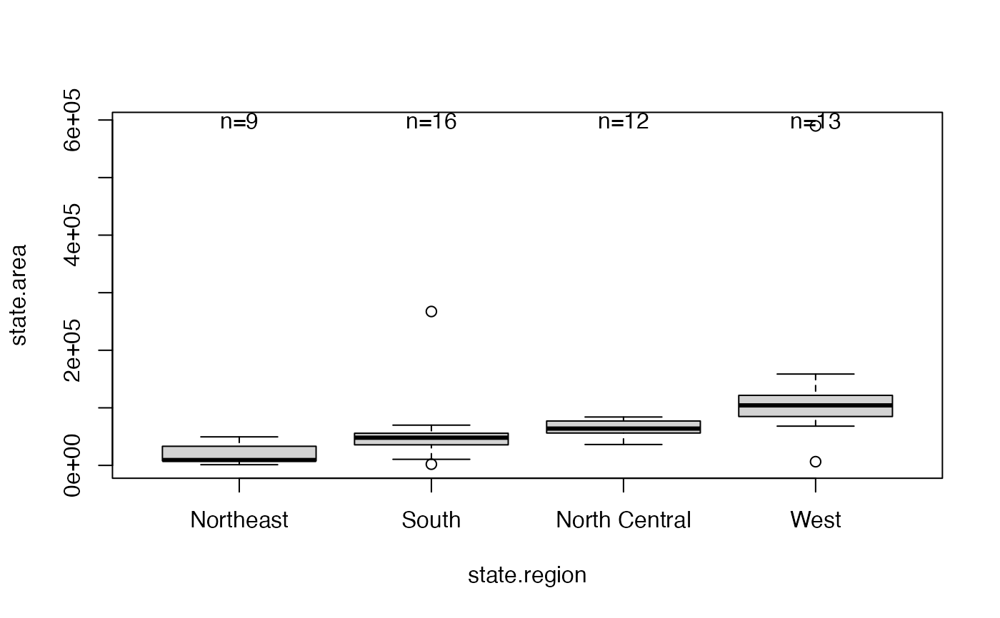
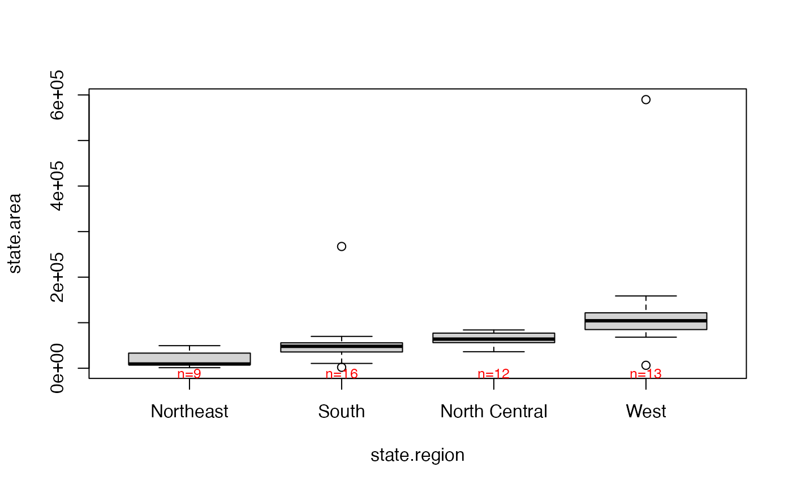

boxplot2.RdThis funcntion uses boxplot to produce a boxplot which is then
annotated with the number of observations in each group.
boxplot2(..., top=FALSE, shrink=1, textcolor=NULL)
| ... | parameters passed to |
|---|---|
| top | logical indicating whether the number of observations
should be added to the top or the bottom of the plotting
region. Defaults to |
| shrink | value to shrink character size (cex) when annotating. |
| textcolor | text color. |
This function replaces boxplot.n, which has been deprecated
avoid potential problems with S3 method dispatching.
# n's at top boxplot2( state.area ~ state.region, top=TRUE)# small red text boxplot2( state.area ~ state.region, shrink=0.8, textcolor="red")